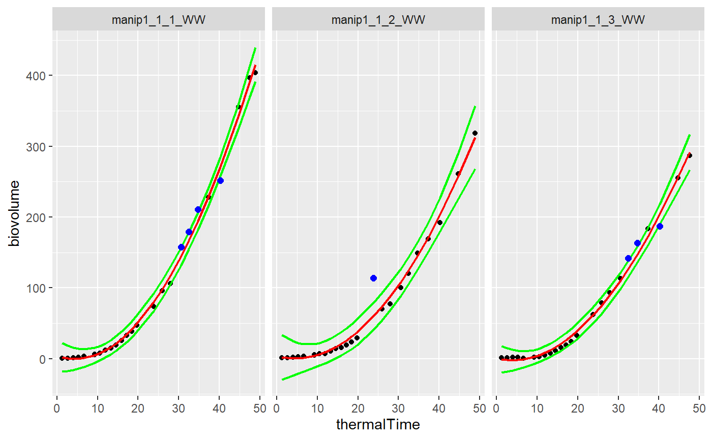

plotDetectPointOutlierLocFit.Rdgraphical function to produced the modelled smoothing and detected outliers for each curve of a dataset using a local regression --- Input:
plotDetectPointOutlierLocFit(datain, resuin, myparam, mytime, myid)
| datain | input dataframe. This dataframe contains a set of time courses |
|---|---|
| resuin | input dataframe of results from funcDetectPointOutlierLocFit function. |
| myparam | character, name of the variable to model in datain (for example, Biomass, PH or LA and so on) |
| mytime | character, name of the time variable in datain which must be numeric |
| myid | character, name of the id variable in datain |
graphics
see locfit() help function from the locfit R library
see funcDetectPointOutlierLocFit function
library(locfit) selec<-c("manip1_1_1_WW","manip1_1_2_WW","manip1_1_3_WW") mydata<-plant1[plant1[,"Ref"] %in% selec,] resu<-FuncDetectPointOutlierLocFit(datain=mydata, myparam="biovolume",mytime="thermalTime", myid="Ref",mylevel=5,mylocfit=70) plotDetectPointOutlierLocFit(datain=mydata,resuin=resu,myparam="biovolume", mytime="thermalTime",myid="Ref")#> Warning: Removed 8 rows containing missing values (geom_point).